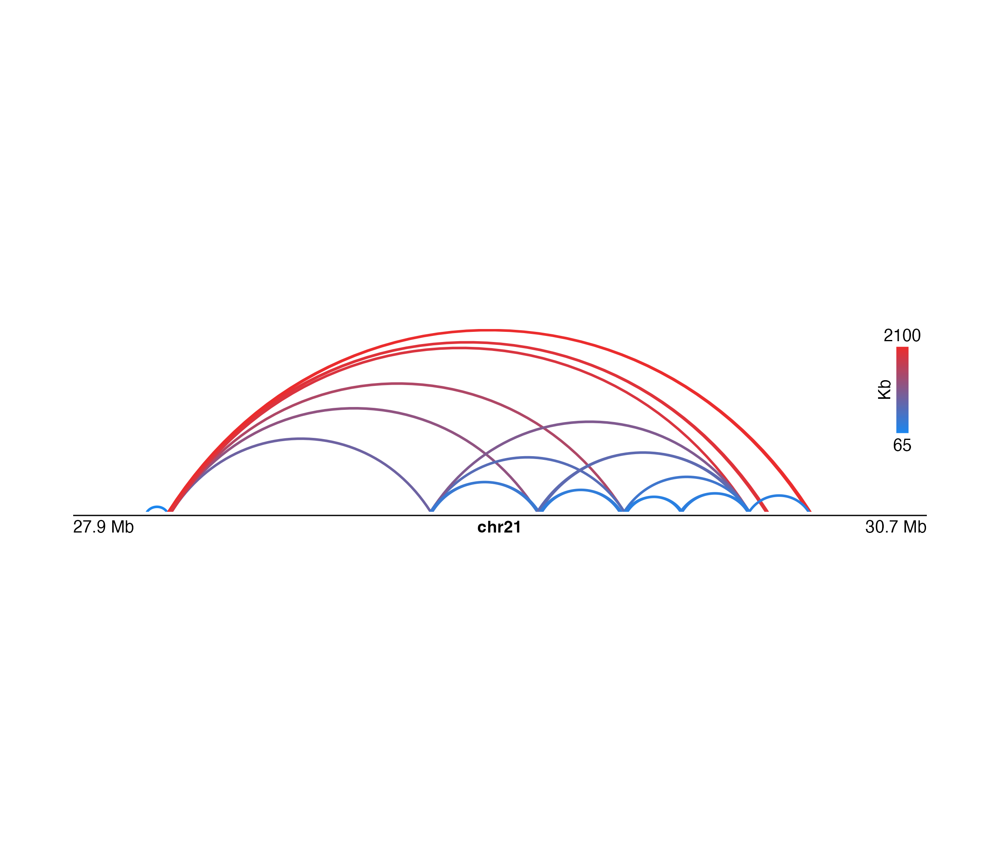

R/mapColors.R
mapColors.RdMaps a numeric or character vector to a color palette and returns the vector of colors
mapColors(vector, palette, range = NULL)
| vector | Vector to map to color. |
|---|---|
| palette | Color palette function. |
| range | Range of values to map for a numerical value. |
Returns a character vector of color values. If the input vector is numerical, this vector will have additional `palette` and `range` attributes.
This function allows for the manual mapping of a numerical or factor vector to a palette of colors. For a more automatic implementation of this functionality in plotgardener functions, colorby objects can be used.
## Load paired ranges data in BEDPE format library(plotgardenerData) data("IMR90_DNAloops_pairs") ## Add a length column IMR90_DNAloops_pairs$length <- (IMR90_DNAloops_pairs$start2 - IMR90_DNAloops_pairs$start1) / 1000 ## Map length column to a vector of colors colors <- mapColors(vector = IMR90_DNAloops_pairs$length, palette = colorRampPalette(c("dodgerblue2", "firebrick2"))) ## Pass color vector into bbPlotPairsArches heights <- IMR90_DNAloops_pairs$length / max(IMR90_DNAloops_pairs$length) pageCreate(width = 7.5, height = 2.1, default.units = "inches", showGuides = FALSE, xgrid = 0, ygrid = 0)params <- pgParams( chrom = "chr21", chromstart = 27900000, chromend = 30700000, assembly = "hg19", width = 7 ) archPlot <- plotPairsArches( data = IMR90_DNAloops_pairs, params = params, fill = colors, linecolor = "fill", archHeight = heights, alpha = 1, x = 0.25, y = 0.25, height = 1.5, just = c("left", "top"), default.units = "inches" )#>#>annoHeatmapLegend( plot = archPlot, fontcolor = "black", x = 7.0, y = 0.25, width = 0.10, height = 1, fontsize = 10 )#>#>